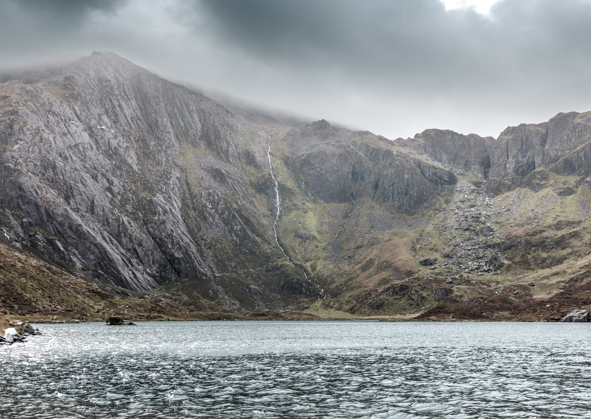
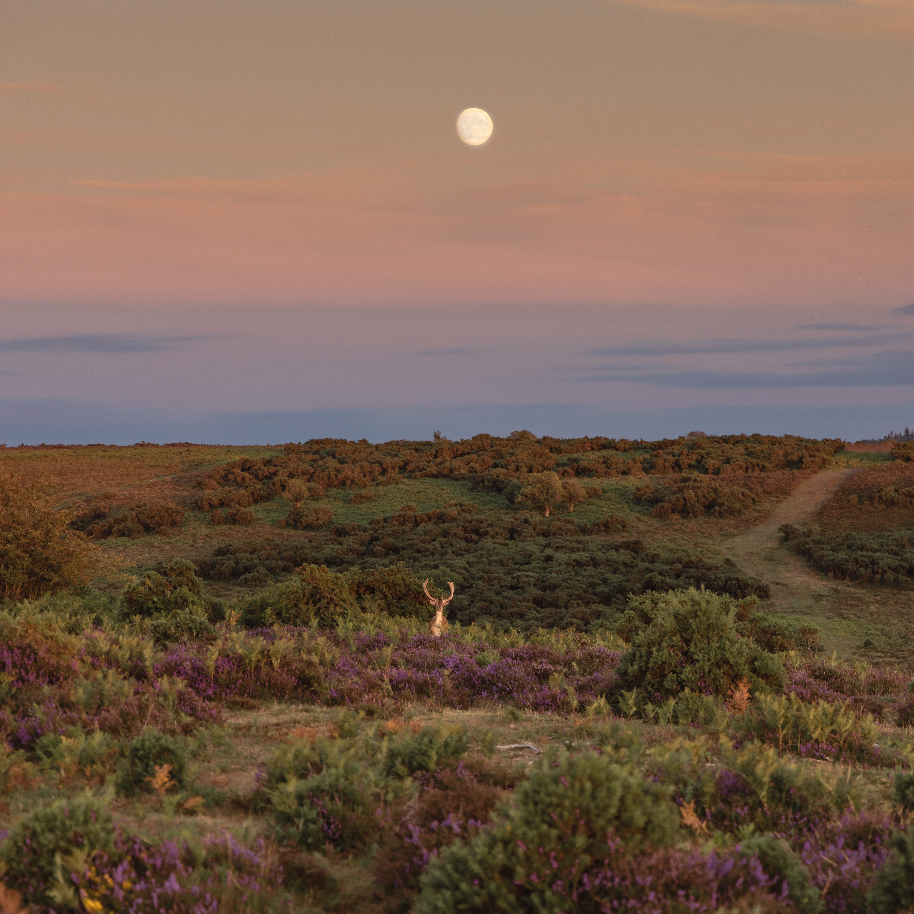

Behind The Camera
Hello — I’m Joe Jenkinson, a landscape and wildlife photographer based in South Wales.
Through photography, I aim to capture the atmosphere, scale, and emotion of the natural world — from dramatic mountain light to intimate wildlife encounters.
My work is available as fine art prints, designed to bring a sense of nature into your home.

Explore The Galleries
Fine Art Prints
Selected images are available as premium-quality fine art prints in a range of sizes and finishes.
Learn More